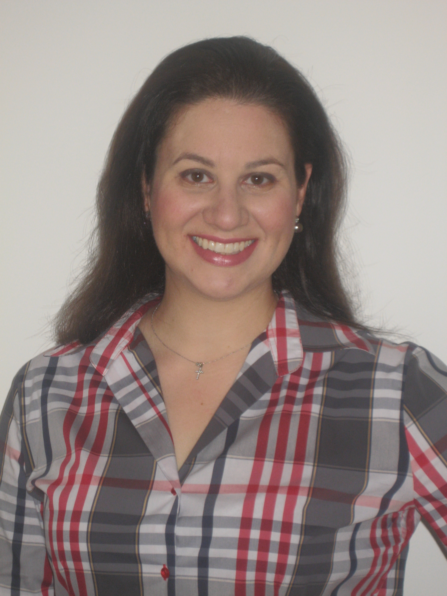

- Βασικές Σπουδές – Ειδικότητα
- Ορθοδοντική, Ειδικότητα και Master
- Αριστοτέλειο Πανεπιστήμιο Θεσσαλονίκης, Βαθμός: Άριστα
- Πτυχίο Οδοντιατρικής
- Αριστοτέλειο Πανεπιστήμιο Θεσσαλονίκης, Βαθμός: Λίαν Καλώς
- Μετεκπαίδευση
- Γναθολογία - Κροταφογναθικές Διαταραχές και Στοματοπροσωπικός Πόνος (Certificate)
- Tufts University, School of Dental Medicine,Boston MA, USA (2006)
- Πιστοποίηση στην τεχνική ορθοδοντικής OrthoClear (Αθήνα 2010)
- Πιστοποίηση στην τεχνική ορθοδοντικής Ιnvisalign με αόρατους νάρθηκες (Amsterdam 2011)
- Πιστοποίηση στην τεχνική ορθοδοντικής Incognito με γλωσσικά σιδεράκια (London 2012)
- Βραβεία/Υποτροφίες
- Ευρωπαϊκό Βραβείο της European Federation of Orthodontics FEO
(Ευρωπαϊκής Ομοσπονδίας Ορθοδοντικών) για την δημοσίευση επιστημονικής διατριβής (2012)
- Έπαινος Αποφοίτησης Απονομής Πτυχίου - 3η κατά σειρά αποφοιτήσασα (2002)
- Πρώτο Βραβείο ΙΚΥ για την επίδοση κατά το ακαδημαϊκό έτος (2001)
- Τιμητική Υποτροφία ΙΚΥ για την διάκριση στις σπουδές (πρώτη σε σειρά επιτυχίας) κατά το ακαδημαϊκό έτος (2001)
- Άλλα βιογραφικά στοιχεία (συνοπτικά)
- Δημοσιεύσεις σε ελληνικά και ξένα περιοδικά
- Διαλέξεις σε Ελλάδα και ΗΠΑ
- Διδασκαλία στο προπτυχιακό πρόγραμμα της Οδοντιατρικής του Τufts University
- Έρευνα στην Ελλάδα (ΑΠΘ) και στις ΗΠΑ (Tufts University)
- Μέλος Επιστημονικών Εταιρειών στην Ελλάδα, Ευρώπη και ΗΠΑ
